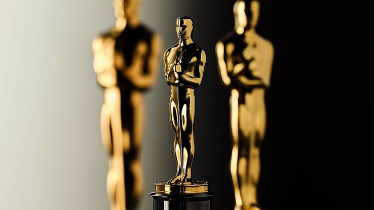

ოსკარი
ოსკარის ისტორიული ცვლილება: კასტინგის დირექტორებს საკუთარი ნომინაცია ექნებათ
1 ივლისი, 2026

ამერიკული კინოაკადემიის (AMPAS) გადაწყვეტილება, დაამატოს ახალი კატეგორია „საუკეთესო მიღწევა კასტინგში“ (Best Achievement in Casting), მართლაც ისტორიული მოვლენაა. ეს არის უდიდესი სტრუქტურული ცვლილება ოსკარის დაჯილდოებაზე ბოლო ათწლეულების განმავლობაში.
რატომ არის ეს ცვლილება ისტორიული?
კასტინგის დირექტორები იყვნენ ერთადერთი ძირითადი დეპარტამენტის ხელმძღვანელები ფილმის ტიტრებში, რომლებსაც კინოაკადემია ინდივიდუალური ოსკარით არ აჯილდოებდა. ოპერატორებს, კოსტიუმების დიზაინერებს, ხმის რეჟისორებს, მემონტაჟეებსა და ვიზუალური ეფექტების სპეციალისტებს დიდი ხანია აქვთ თავიანთი კატეგორიები, კასტინგი კი აქამდე „უხილავ ხელოვნებად“ რჩებოდა.